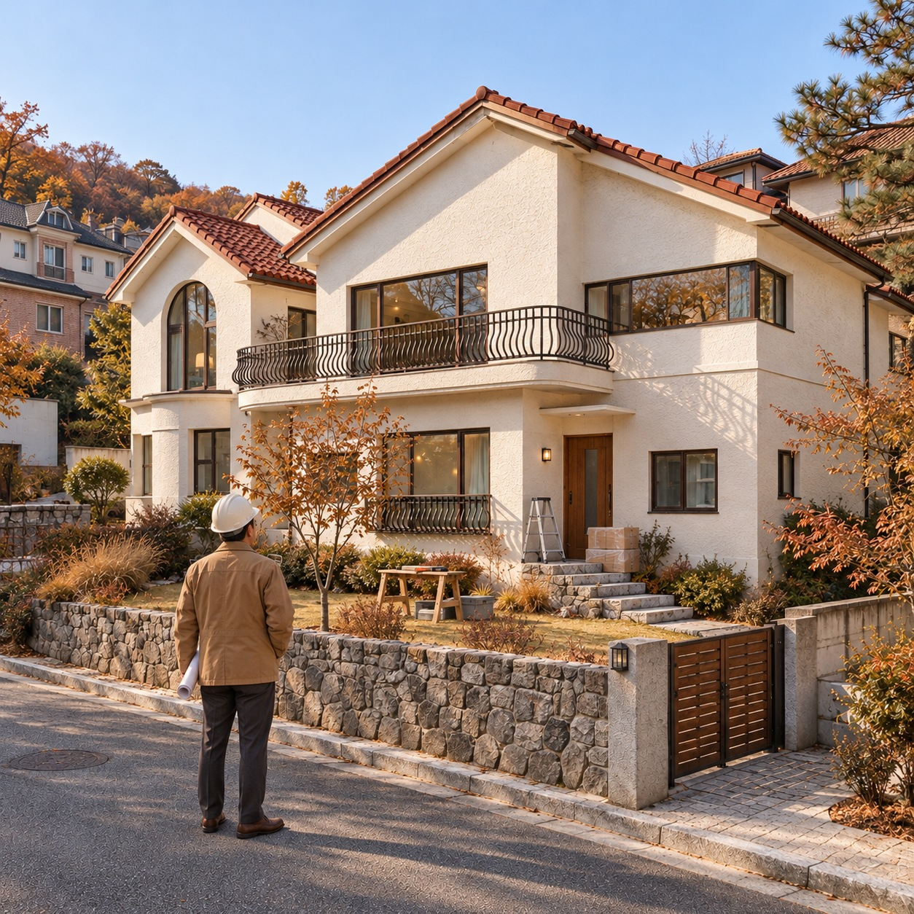
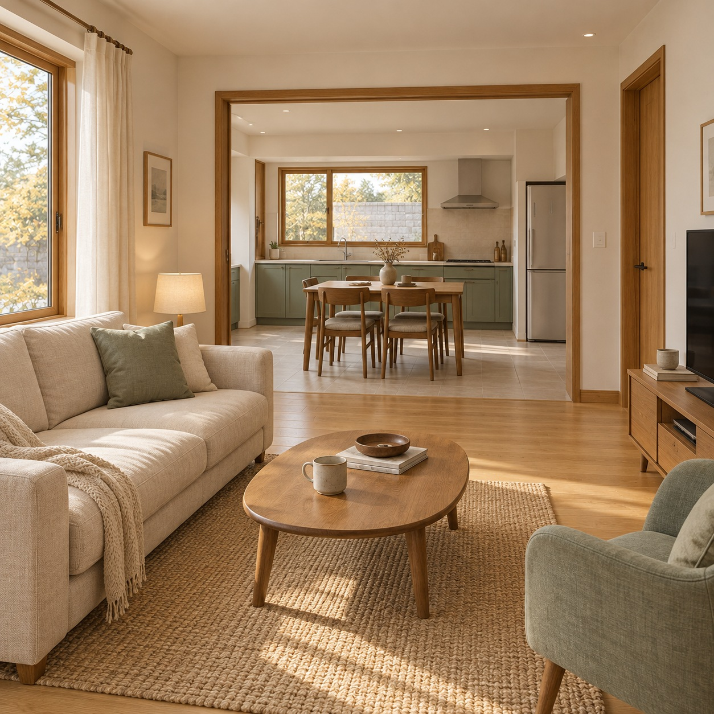
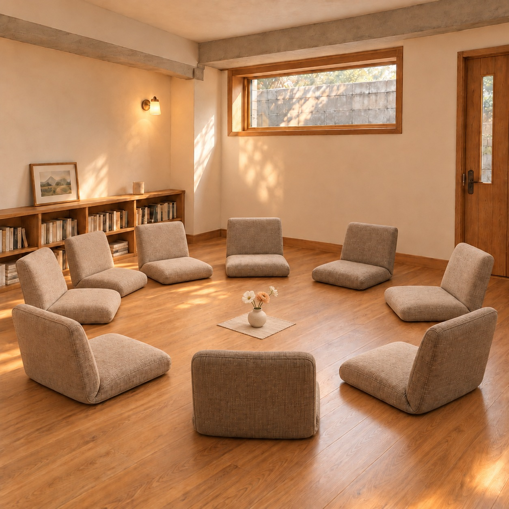
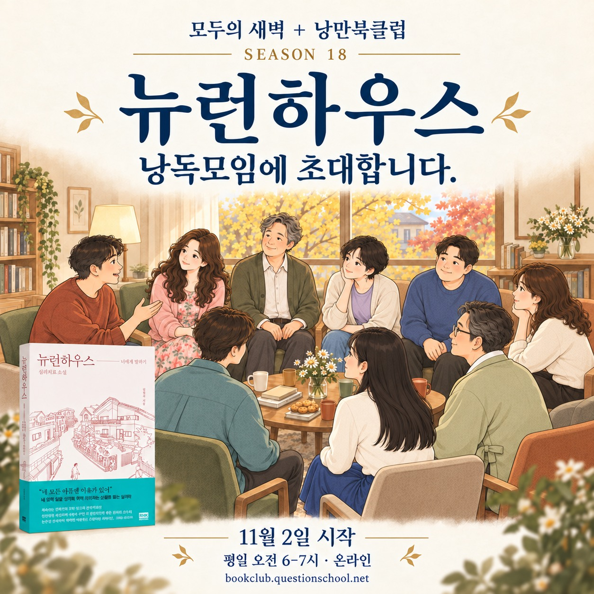

대화모임 참여가 입주의 중요한 약속입니다.
모든 입주자는 주 2회 열리는 ‘창문 닦기 대화모임’에 성실히 참여하도록 입주서약서에 명시되어 있습니다. 뉴런하우스는 8명을 대상으로 특별 가격에 1년간 운영하는 실험 주택으로 소개됩니다.
신청 전에는 운영사에 문의하여 입주 설명과 신청 절차를 확인합니다. 나이·소득·직업에 따른 구체적인 기준은 작품에 제시되어 있지 않습니다.
《뉴런하우스》 26–27쪽
NEURON HOUSE / RESIDENT GUIDE
새로운 집에서의 생활이 편안해지도록,
입주와 함께 알아둘 약속들을 안내합니다.
김정규 《뉴런하우스》 속 입주민을 위한 안내를
책의 초반 장면과 부록에 기반해 구성했습니다.

《뉴런하우스》 25–27쪽 · 입주자 8명과 진행자 나그네가 함께 지내는 집입니다.
THE IDEA BEHIND THE HOUSE
뉴런하우스는 어떤 마음에서 시작됐을까요?
사업가 이한빈 대표는 사회에서 받은 혜택을 일부 돌려주고 싶다는 마음으로 뉴런하우스를 구상합니다. 수익을 얻기보다, 서로 마음과 마음이 통하는 작은 주거공동체를 만드는 것이 그의 바람입니다.
개인적인 어려움으로 심리치료를 경험한 그는 도움이 필요해도 충분한 도움을 받지 못하는 사람들이 많다는 사실을 알게 됩니다. 뿔뿔이 흩어져 각자도생하는 도시의 삶 속에서, 함께 지내며 마음을 나눌 수 있는 치료공동체를 생각합니다.
뉴런은 신경세포를 뜻합니다. 하나하나 독립되어 있으면서도 서로 연결되어 살아 있는 생명체를 이루듯, 각자의 삶을 유지하며 서로 교감하는 공동체를 바라는 마음이 이 이름에 담겨 있습니다.
나그네 김영민은 이 구상에서 자신이 품어온 ‘심리치료의 현실 참여’라는 뜻을 발견하고 함께하기로 합니다. 뉴런하우스의 대화모임은 함께 사는 일상 속에 마음을 나누는 자리를 마련한 것입니다.
《뉴런하우스》 13–15쪽 · 설립 취지와 이름의 유래를 안내 형식으로 요약했습니다.
01 / BEFORE YOU MOVE IN
혼자 쓰는 방뿐 아니라, 함께 만나는 시간에도 동의하는 사람.
모든 입주자는 주 2회 열리는 ‘창문 닦기 대화모임’에 성실히 참여하도록 입주서약서에 명시되어 있습니다. 뉴런하우스는 8명을 대상으로 특별 가격에 1년간 운영하는 실험 주택으로 소개됩니다.
신청 전에는 운영사에 문의하여 입주 설명과 신청 절차를 확인합니다. 나이·소득·직업에 따른 구체적인 기준은 작품에 제시되어 있지 않습니다.
《뉴런하우스》 26–27쪽
《뉴런하우스》 26–29쪽 · 평화의 신청·입주 장면을 정리했습니다.
ROOM & COST
현재 임대 시세가 아닌
소설 속 광고에 적힌 금액입니다.
| 방 유형 | 보증금 | 월세 | 장학금 수령 후 월세 부담 |
|---|---|---|---|
| 1인실 | 80만 원 | 40만 원 | 30만 원 |
| 2인실 | 60만 원 | 30만 원 | 20만 원 |
월 10만 원의 장학금을 받는 경우, 광고의 월세에서 장학금을 뺀 금액입니다. 관리비·공과금은 포함하지 않았으며, 2인실 비용의 세부 산정 단위는 작품에 명시되어 있지 않습니다. 장학금 지급에는 대화모임 참석 조건이 적용됩니다.
《뉴런하우스》 25–26쪽
작품 속 입주서약서는 특별한 사유 없이 월 2회 이상 결석하면 해당 월의 장학금을 지급하지 않으며, 무단결석이 누적 4회가 되면 보증금 반환 없이 즉시 퇴거한다고 설명합니다.
별도의 ‘자살예방서약서’에 서명하는 장면도 등장합니다. 여기서는 서류의 존재를 기록하며, 그 내용을 현실의 안전 대책이나 계약 양식으로 제안하지 않습니다.
《뉴런하우스》 27–28쪽 · 작품 속 계약 설정에 대한 요약입니다.
02 / LIVING TOGETHER

입주 때 시설 사용 사항과 공동생활 규칙이 담긴 매뉴얼을 받습니다. 다만 책에는 그 매뉴얼의 항목 전체가 실려 있지 않습니다.
《뉴런하우스》 28쪽
첫 모임에서 입주자들은 화장실·거실·주방의 관리와 청소를 의논합니다. 함께 쓰는 공간의 약속을 서로 이야기하며 정하는 장면입니다.
《뉴런하우스》 37–38쪽
진행자는 집 안에서 생기는 개인 문제나 구성원 사이의 갈등을 대화모임에서 다루도록 안내합니다.
《뉴런하우스》 38–39쪽
03 / THE WINDOW OF THE MIND
유리창 청소를 함께하는 시간이 아니라,
서로를 있는 그대로 만나기 위한 시간.
나그네는 사람이나 사물을 있는 그대로 보기 어려운 까닭을 마음의 창에 낀 때에 비유합니다. 함께 살며 대화하는 동안 그 창을 조금씩 닦아가자는 뜻으로 모임의 이름을 제안합니다.
《뉴런하우스》 32–33쪽

두 번째 모임에서 진행자가 안내하는 원칙을 정리했습니다.
모임에서 나온 개인적인 이야기를 외부에 누설하지 않는 것이 기본 약속입니다.
서로의 이야기가 안전하게 오갈 수 있도록 진행자가 강조하는 원칙입니다.
집 안의 개인 문제와 구성원 사이의 갈등도 이 자리에서 다루도록 안내합니다.
‘자신의 진실’은 거창한 정답이 아니라 그 순간의 솔직한 마음이라고 설명합니다.
《뉴런하우스》 38–40쪽
A SMALL BEGINNING
아래 문장은 책의 대화 원칙을 이해하기 위한 창작 예시입니다. 소설 속 인물의 실제 대사는 아닙니다.
“처음 보는 사람들이라 아직 조금 긴장돼요.”
부록은 진정한 만남을, 편견과 평가를 내려놓고 서로의 존재를 있는 그대로 만나는 경험으로 설명합니다. 즐겁게 어울리는 것과 마음 깊이 연결되는 만남은 같지 않을 수 있다는 이야기입니다.
‘너에게 말하기’는 상대를 분석하거나 정보만 주고받는 데서 한 걸음 더 나아가, 마음을 열고 직접 만나는 대화로 소개됩니다.
《뉴런하우스》 부록 「너에게 말하기 — 만남의 순간」, 368–369쪽
04 / YOUR FIRST QUESTIONS
책에 말솜씨를 입주 자격으로 정한 대목은 없습니다. 첫 모임의 사람들은 서로 낯설어하고, 어디까지 이야기할지 걱정합니다. 진행자는 자유롭게 이야기하며 서로를 알아갈 시간을 마련합니다.
《뉴런하우스》 37–40쪽
주 2회 참석은 명시된 조건입니다. 첫 모임은 화요일 저녁, 두 번째는 토요일 저녁으로 묘사되고 첫 모임은 두 시간가량 이어집니다. 이 장면만으로 매회 같은 요일·시간·길이가 고정되어 있다고 단정하지는 않았습니다.
《뉴런하우스》 27 · 32 · 38쪽
입주자 매뉴얼을 받는 장면은 있지만 전문은 제시되지 않습니다. 공용공간의 관리·청소를 첫 모임에서 함께 의논한다는 점까지 확인할 수 있습니다.
《뉴런하우스》 28 · 38쪽
책 속 광고에는 1인실과 2인실이 모두 나옵니다. 초반에는 햇살·바람, 새벽·오아시스가 각각 방을 함께 쓰는 관계로 소개됩니다. 다른 방의 정확한 전체 배치도는 이 안내에서 새로 확정하지 않았습니다.
《뉴런하우스》 25–26 · 36–37쪽
BEFORE YOUR FIRST HELLO
새로운 생활을 시작하기 전,
아래 약속을 차근차근 확인해보세요.
김정규 《뉴런하우스》의 설립 구상(13–15쪽), 입주 광고·계약·첫 두 모임(25–40쪽)과 부록 「너에게 말하기 — 만남의 순간」(368–369쪽)을 중심으로 요약했습니다. 개별 인물의 후반 사연이나 사건은 담지 않았습니다.
쪽수는 보관된 스캔 판본의 페이지 표기를 따라 적었습니다. 입주 대상의 세부 자격, 생활규칙 매뉴얼 전문, 관리비와 공과금, 고정된 모임 시간표는 확인되지 않아 추가하지 않았습니다. 문장은 안내 형식에 맞춰 다시 썼고, 대화 연습 예시는 창작임을 표시했습니다.
Modoo's Book Club · Season 18
모두의 새벽 + 낭만북클럽
